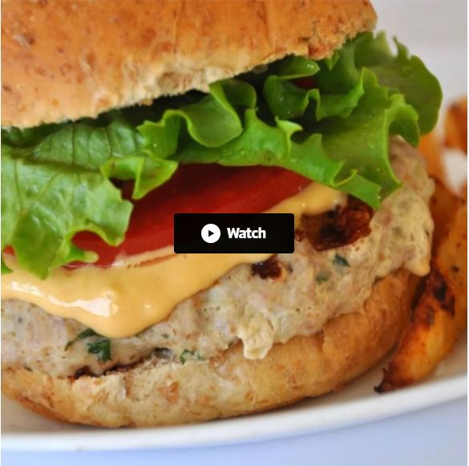

Turkey Burgers
— Actually Delicious Turkey
Burgers —

This is a simple and delicious recipe. After making them the first time my husband said ‘no more’ to beef burgers. These are really good - any cooking method may be used, and they freeze very well. The recipe can also be used for meatballs or meat loaves.
· · · Method · · ·
3 poundsground turkey¼ cupseasoned bread crumbs¼ cupfinely diced onion2egg whites, lightly beaten¼ cupchopped fresh parsley1clove garlic, peeled and minced1 tspsalt¼ tspground black pepper
In a large bowl, mix ground turkey, seasoned bread crumbs, onion, egg whites, parsley, garlic, salt, and pepper. Form into 12 patties.
Cook the patties in a medium skillet over medium heat, turning once, to an internal temperature of 180 degrees F (85 degrees C).